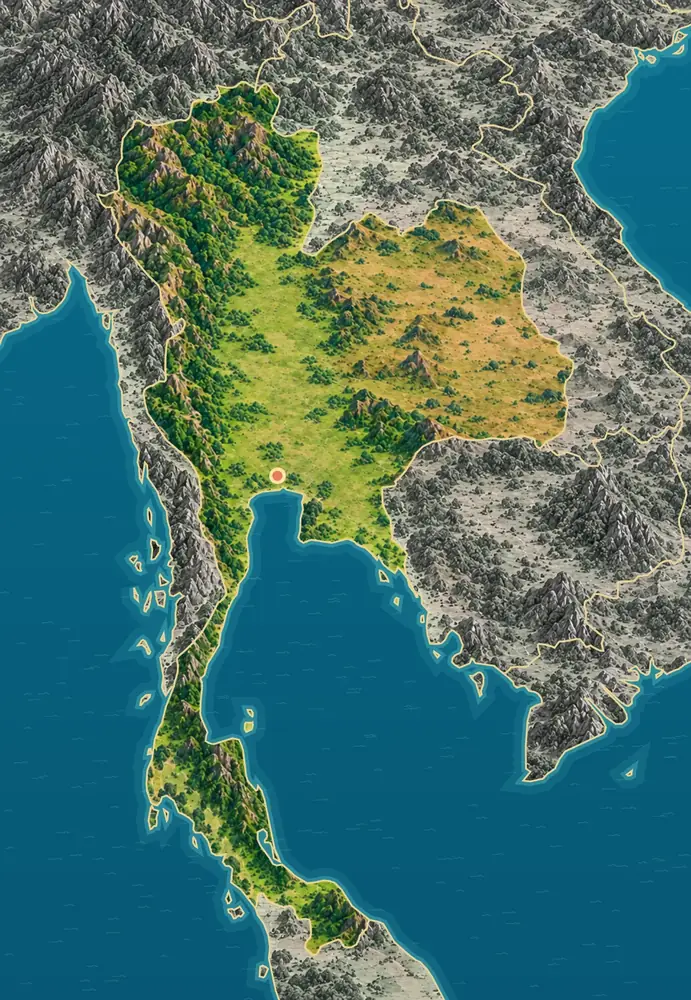
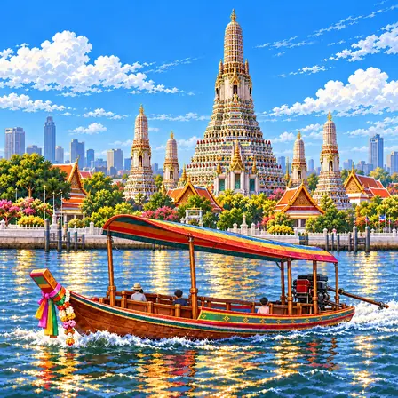
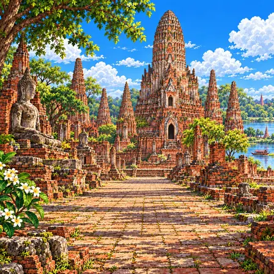
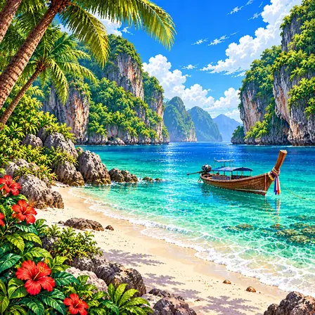
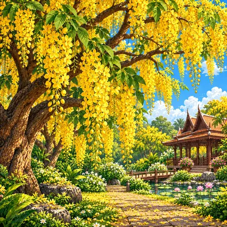
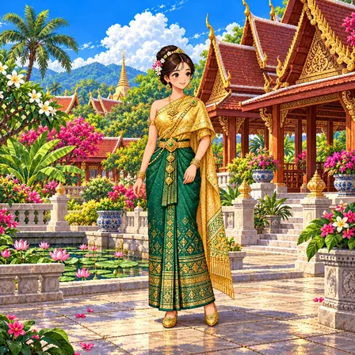
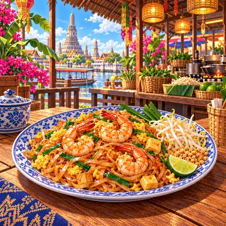
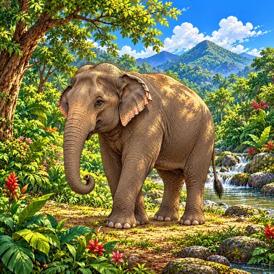
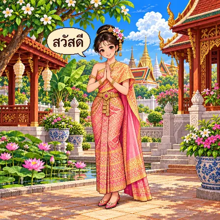

Mountains, plain and plateau
Forested ranges run through the north and west, where Doi Inthanon reaches 2,565 m. The broad, flat Khorat Plateau occupies the northeast.
World Geography Atlas › Asia › Southeast Asia

ไทย
The land of smiles · elephants and temples.

Thailand has forested mountains in the north and a wide plain of rice fields in the middle. The south is a long peninsula between two seas.
Thailand divides into northern and western mountains, the central Chao Phraya plain, the northeastern Khorat Plateau and the southern peninsula. Its highest peak is Doi Inthanon (2,565 m) in the north.
Forested ranges run through the north and west, where Doi Inthanon reaches 2,565 m. The broad, flat Khorat Plateau occupies the northeast.
The Chao Phraya flows across the central plain and through Bangkok to the Gulf of Thailand. This low land, built from river sediment, is ideal for rice farming.
Southern Thailand reaches down a long, narrow peninsula with the Andaman Sea to the west and the Gulf of Thailand to the east, and forested hills along its middle.
The Andaman side has many islands, such as Ko Phi Phi, with steep limestone cliffs, small bays and white sand beaches.
Southern Thailand has much karst-limestone dissolved and carved by rainwater into caves, cliffs and tower-like peaks. Satun UNESCO Global Geopark also preserves fossils of ancient sea life.
Rivers carry soil and sand from the mountains and spread them over the central lowlands. The plain’s fertile ground formed very differently from the rocky mountains.
A city, a heritage site, nature, a plant, culture, food, an animal, a greeting and the flag of Thailand, each drawn as pixel art.

Bangkok is the capital of Thailand. The city spreads along a big river and its canals. On the riverbank stands Wat Arun, a tall, richly decorated tower.
Bangkok is Thailand’s capital, where the Chao Phraya River and canals have long been part of city life. Temples, older riverfront buildings and modern urban scenery stand near one another. Wat Arun, on the riverbank, is famous for its tall tower. This type of tower is called a prang, and its ceramic decoration gives it a richly patterned surface. Long-tail boats travel up and down the river.

Ayutthaya was the capital of an old Thai kingdom for more than 400 years. Many pointed red-brick towers and Buddha statues remain there. Today it is protected as a World Heritage Site.
Founded in 1350, Ayutthaya flourished as a capital of the Siamese Kingdom. Its position among rivers helped it become a centre of trade and diplomacy. After severe destruction in 1767, remains of temples and palace grounds survived as an archaeological site. Tall prangs, brick galleries and Buddha figures reveal aspects of its architecture and Buddhist culture. The Historic City of Ayutthaya was inscribed on UNESCO’s World Heritage List in 1991.

The Phi Phi Islands are in the sea in southern Thailand. Tall rock cliffs wrap around emerald-green water. They are famous for white sandy beaches and coral reefs.
The Phi Phi Islands lie in the Andaman Sea off southern Thailand. Steep limestone cliffs, small bays and pale sandy beaches distinguish their coastline. In places such as Maya Bay, cliffs enclose water whose colour changes between shallow and deeper areas. Plants growing in rock crevices, coastal forest and marine life are also part of the setting.

Ratchaphruek is a tree whose yellow flowers hang down in long bunches like grapes. In the hot season the whole tree turns golden. That is why it is also called the golden shower tree.
Ratchaphruek, the golden shower tree, is known botanically as Cassia fistula. Its yellow flowers grow in long, loose clusters that hang from the branches. Individual petals and slender flower stalks become visible when viewed closely. Its compound leaves contain several leaflets, while the bark and branching structure add different textures.

Chut thai is Thailand's traditional clothing. It has a shiny silk skirt and a cloth draped over the shoulder. People wear it on special days like weddings and festivals.
Chut Thai means Thai clothing and includes several forms of traditional dress. Eight formal styles for women were established through Queen Sirikit’s efforts. Among them, the Chakri style has a sabai draped over one shoulder. A long fitted skirt, belt and fine gold-coloured woven patterns distinguish the outfit.

Pad thai is a Thai dish of stir-fried flat rice noodles. Shrimp, tofu, egg and bean sprouts go in too. You sprinkle peanuts and squeeze lime on top for a sweet and sour taste.
Pad Thai is a well-known Thai dish made by stir-frying rice noodles. Shrimp, tofu and egg are common additions, with tamarind contributing a sour flavour balanced by sweetness. Bean sprouts, chives, crushed peanuts and lime may accompany the noodles. Ingredients and seasoning vary between cooks and restaurants.

The elephants in Thailand are Asian elephants. Their ears are smaller than African elephants' ears. They use their long trunks to smell, drink water and pick up food.
Elephants living in Thailand are Asian elephants. Their relatively small ears, twin-domed forehead and long flexible trunk distinguish them from African elephants. The trunk serves many purposes, including smelling, grasping food and drinking. They eat plants such as grasses, leaves, bark and fruit. Elephants need extensive, connected habitat in which to find food and water.

Sawasdee means "hello" in Thai. People say it with a wai, pressing their hands together and bowing. Women add "ka" and men add "krap" to be more polite.
Sawasdee (สวัสดี) is a Thai greeting used when meeting people. The wai expresses respect by bringing the palms together, sometimes with a slight bow. Women commonly add kha and men khrap when speaking politely. The height and form of a wai can vary with the person and situation.

Thailand's flag has five stripes: red, white, blue, white and red. The blue stripe in the middle is twice as wide as the others. Red stands for the people, white for religion and blue for the king.
Thailand's flag is made of five level stripes - red, white, blue, white, and red - with the blue stripe in the middle twice as wide. It is called the Trairong, which means "three colors." Officially, red stands for the people, white for religion, and blue for the royal family. It was given its present form in 1917, in the reign of King Rama VI. It is a flag that shows the three pillars of the nation in color.